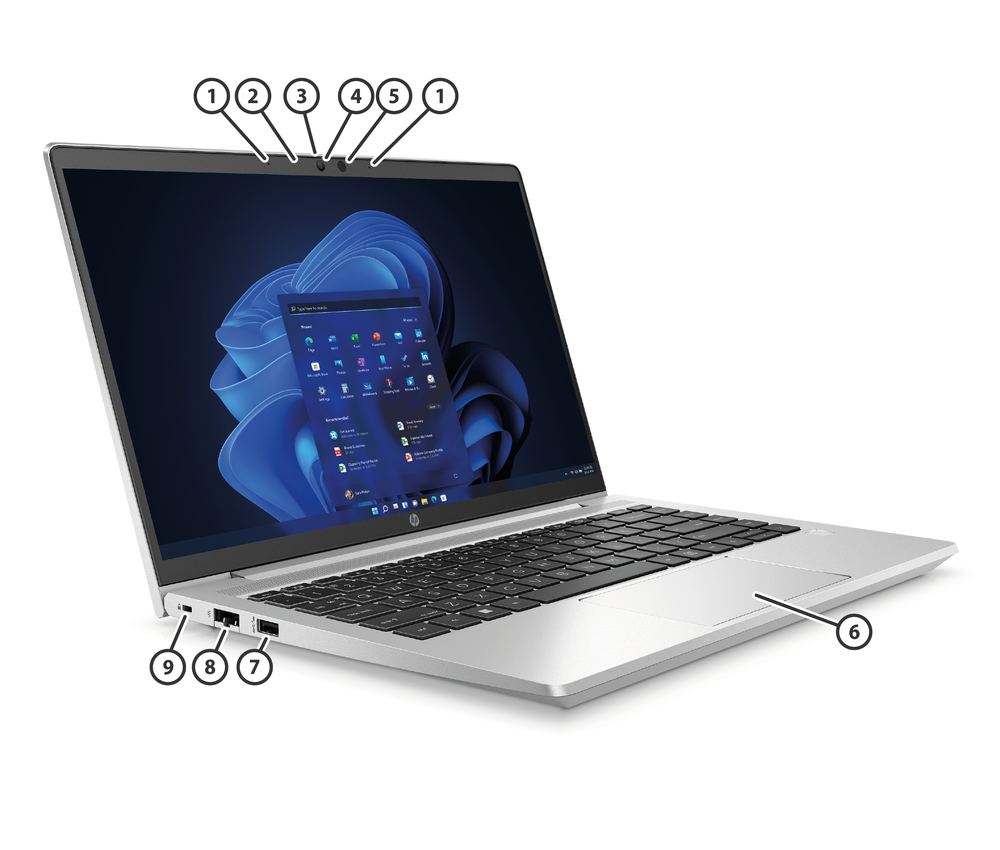

HP EliteBook 865 164 inch G10 Notebook PC
Left
| Ambient Light Sensor (Optional) | Internal Microphones (2) |
| Webcam LED (Optional) | Webcam |
| Camera Shutter | IR Camera (Optional) |
| IR Camera LEDs (Optional) | Glass Clickpad |
| Smartcard Reader (Optional) | LED Indicator |
| USB4 Type-C® (USB Power Delivery, DisplayPort™ 1.4) | USB4 Type-C® (USB Power Delivery, DisplayPort™ 1.4) |
| SuperSpeed USB Type-A 5Gbps signaling rate | HDMI 2.0b Port (Cable not included) |
Right
| Power Button Key | Audio Combo Jack |
| SuperSpeed USB Type-A 5Gbps signaling rate (Charging) | Nano Security Lock Slot (Lock sold separately) |
| SIM Card Slot (Optional) | Touch Fingerprint Sensor (Select models) |
Preinstalled with Windows 11 versions or FreeDOS
New 16:10 ratio screen reduces the need to scroll by showing more vertical content than 16:9
Optional ultrabright displays with HP Eye Ease, ambient light and ambient color sensors
New 5MP camera4 with HP Auto Frame8 allows you around a little without losing viewers’ attention during video calls
New DDR5 5600 memory and PCI Gen4 SSDs provide fast access to your work.
Choice of displays: 40.6 cm (16") diagonal WUXGA IPS Anti-Glare LED-backlit non-touch, 250 nits, 45% NTSC 40.6 cm (16") diagonal WUXGA IPS Anti-Glare On-Cell LED-backlit touch, 250 nits, 45% NTSC 40.6 cm (16") diagonal WUXGA IPS Anti-Glare LED-backlit non-touch, 400 nits, 100% sRGB 40.6 cm (16") diagonal WUXGA IPS Anti-Glare LED-backlit non-touch, 1000 nits, 100% sRGB with HP Sure View Reflect
Redesigned keyboard layout to include easy use of discrete PgUp/Dn, End, and Home keys
Choose from 38Whr or 51Whr battery options
HP Wolf Security for Business creates a hardware-enforced, always-on, resilient defense.9
Larger Clickpad surface for easier, more intuitive input
Connect almost anywhere with support for up to 5G wireless broadband technology with 4x4 antennas
Undergoes MIL-STD 810H tests1
Supports fast charging (50% in 30 minutes) with no impact on battery recharge cycles3
NOTE: See important legal disclosures for all listed specs in their respective features sectionsHP EliteBook 865 164 inch G10 Notebook PC
| Preinstalled | |
| Windows 11 Pro [1] | |
| Windows 11 Pro Education [1] | |
| Windows 11 Home - HP recommends Windows 11 Pro for Business[1] | |
| Windows 11 Home Single Language – HP recommends Windows 11 Pro for Business [1] | |
| Windows 11 Pro (Windows 11 Enterprise or Windows 10 Enterprise available with a Volume Licensing Agreement) [1] | |
| Windows 11 Pro (preinstalled with Windows 10 Pro Downgrade) [1] [2] | |
| FreeDOS |